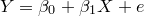

| 階層的線形モデル（HLM）について |
| 階層的線形モデル（HLM）について |
このような階層的構造を持つデータをどのようにして分析したらよいのだろうか。 Figure2は学習意欲と学力という2つの変数の関係について学級ごとに模式的に散布図を表したものである。
このデータから学習意欲と学力との相関関係，特に学習意欲（）から学力（）を回帰式によって予測説明することを考える。 この場合，3つの学級のデータをまとめて
|  | (1) |
という単回帰式を当てはめていいだろうか。 結果からいうとこれは相当まずいやり方である。 というのも，Figure2から明らかなように，学習意欲と学力との相関関係は学級によってずいぶん異なっているからである。 実際，学級A（学習意欲が平均的に低く学力は平均的に高い）では2変数間に目立った相関関係はないのに対し，学級BやC（学習意欲は学級Aと比べて高いが学力はそれなりに低い）では学習意欲の高い子どもほど学力も高い，という正の相関関係が存在するからである。 こうした学級間の違いを考慮せず，データ全体に式（1）のような回帰式を当てはめると，Figure2の灰色の点線で示したように回帰係数が負，つまり学習意欲の高い子どもほど学力が低い傾向にある，というどの学級にも当てはまらない現象が分析結果として得られてしまう1。
こうした問題を解決するための素朴な方法の1つとして思いつくのは，学級ごとに回帰直線を当てはめればいいのではないかというものであろう。 つまり，
| (2) | |||
| (3) | |||
| (4) |
を考えるということである。 この方法では，データ全体に対して回帰式を当てはめることで生じる問題は回避される。 つまり，学級ごとに学習意欲と学力との関係性が異なるということは「それぞれの学級用の」回帰式における切片や傾きの違いとして表れるからである。
Footnotes
| 階層的線形モデル（HLM）について |